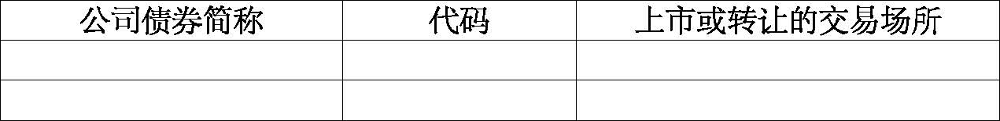
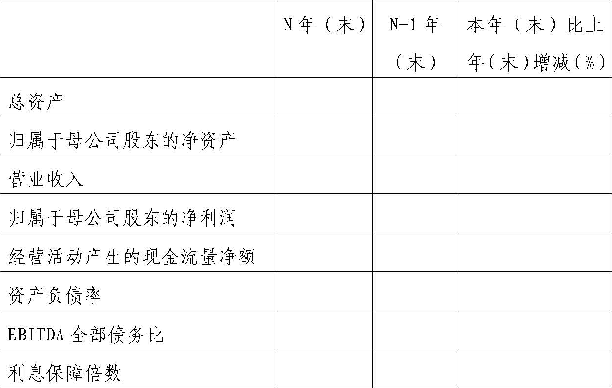

公开发行证券的公司信息披露内容与格式准则第38号——公司债券年度报告的内容与格式
第一章 总则
第一条 为规范公开发行公司债券的公司年度报告的编制及信息披露行为，保护投资者合法权益，根据《公司法》、《证券法》、《公司债券发行与交易管理办法》等法律、法规及中国证券监督管理委员会（以下简称中国证监会）有关规定，制定本准则。
第二条 在中华人民共和国境内公开发行公司债券并在证券交易所、全国中小企业股份转让系统上市或转让，且在年度报告批准报出日公司债券未到期或到期未能全额兑付的公司（以下简称公司），应当按照本准则的要求编制和披露年度报告。
上市公司、全国中小企业股份转让系统挂牌公司公开发行公司债券的，应当按照中国证监会及相关证券交易场所的其他规定编制和披露年度报告，但应当同时将披露的年度报告刊登在其债券交易场所的互联网网站。
第三条 本准则的规定是对公司债券年度报告信息披露的最低要求；对投资者投资决策有重大影响的信息，公司均应当披露。
本准则某些具体要求对公司确实不适用的，公司可以根据实际情况调整，并在相关章节说明调整原因。
由于商业秘密等特殊原因导致本准则规定的某些信息确实不便披露的，公司可以不予披露，但应当在相关章节详细说明未按本准则要求进行披露的原因。中国证监会认为需要披露的，公司应当披露。
第四条 在不影响信息披露完整性和不妨碍阅读的前提下，公司可采取相互引证的方法，对年度报告相关部分进行合理的技术处理，以避免不必要的重复和保持文字简洁。
第五条 年度报告的全文应当遵循本准则第二章的要求进行编制和披露。
年度报告摘要应当遵循本准则第三章的要求，按照附件的格式进行编制和披露。
第六条 年度报告中的财务报告应当由具有从事证券服务业务资格的会计师事务所审计，审计报告应当由该所至少两名注册会计师签字。
第七条 公司在编制年度报告时应当遵循如下一般要求：
（一）年度报告中引用的数字应当采用阿拉伯数字，货币金额除特别说明外，通常指人民币金额，并以元、千元、万元、百万元或亿元为单位。
（二）公司可根据有关规定或其他需求，编制年度报告外文译本，同时应当保证中外文文本的一致性，并在外文文本上注明：“本报告分别以中、英（或日、法、俄等）文编制，在对中外文文本的理解上发生歧义时，以中文文本为准。”
（三）年度报告封面应当载明公司的中文名称、“公司债券年度报告”字样、报告期年份，年度报告的目录应当编排在显著位置。
（四）年度报告应当使用通俗易懂的事实性描述语言，引用的数据应当提供资料来源，事实依据应当充分、客观；不得有祝贺性、恭维性、推荐性或诋毁性的措辞，不得含有欺诈、误导内容的词句。
（五）公司债券年度报告应当参照中国证监会上市公司行业分类的有关规定，公司可以增加披露所适用的其他的行业分类数据、资料作为参考。
第八条 公司应当在每个会计年度结束之日起4个月内将年度报告全文和摘要刊登在其公司债券上市或转让的证券交易场所网站上。
公司按照境内外其他监管机构、交易场所等的要求公开披露年度报告、年度财务信息，或者将公司债券年度报告刊登在其他媒体上的时间不得早于在中国证监会指定媒体披露的时间。
第九条 公司应当在年度报告披露后，将年度报告原件备置于公司住所，以供投资者及社会公众查阅。
第十条 中国证监会和相关证券交易场所对特殊行业公司信息披露另有规定的，公司应当遵循其规定。
行业主管部门对公司信息披露另有规定的，公司在编制和披露年度报告时应当遵循其规定。
第二章 年度报告正文
第一节 重要提示、目录和释义
第十一条 公司应当在年度报告文本扉页刊登如下重要提示：公司董事、监事、高级管理人员保证年度报告内容的真实、准确、完整，不存在虚假记载、误导性陈述或重大遗漏，并承担相应的法律责任。
如有董事、监事、高级管理人员对年度报告内容存在异议或无法保证其真实、准确、完整的，应当声明XX无法保证本报告内容的真实、准确、完整，并说明理由，请投资者特别关注。
如执行审计的会计师事务所对公司出具了非标准审计报告，重要提示中应当声明XX会计师事务所为本公司出具了带强调事项段或其他事项段的无保留意见、保留意见、否定意见或无法表示意见的审计报告，本公司董事会（或法律法规及公司章程规定的有权机构）对相关事项已有详细说明，请投资者注意阅读。
第十二条 公司应当刊登重大风险提示，披露可能对公司债券的偿付以及债券价值判断和投资者权益保护产生重大不利影响的风险。公司对风险因素的描述应当遵循关联性和重要性原则，重点说明与上一年度（或募集说明书）所提示的风险因素的变化之处。
第十三条 公司应当对可能造成投资者理解障碍以及特定含义的术语作出通俗易懂的解释，年度报告的释义应当在目录次页排印。
年度报告目录应当标明各章、节的标题及其对应的页码。
第二节 公司及相关中介机构简介
第十四条 公司应当披露如下内容：
（一）公司的中文名称及简称，外文名称及缩写；
（二）公司的法定代表人；
（三）信息披露事务负责人的姓名、联系地址、电话、传真、电子信箱；
（四）公司注册地址，公司办公地址及其邮政编码，公司网址、电子信箱；
（五）公司登载年度报告的交易场所网站的网址，年度报告备置地；
（六）报告期内公司控股股东、实际控制人、董事、监事、高级管理人员的变更情况。
报告期内公司控股股东、实际控制人发生变更的，公司应当参照《公开发行证券的公司信息披露内容与格式准则第23号——公开发行公司债券募集说明书》第三十六条的规定披露新任控股股东、实际控制人的相关情况；未发生变更的，应当披露控股股东、实际控制人具体信息与上一年度报告（或募集说明书）披露情况的变化之处。
第十五条 公司应当披露相关中介机构情况：公司聘请的会计师事务所名称、办公地址及签字会计师姓名；债券受托管理人名称、办公地址、联系人及联系电话；报告期内对公司债券进行跟踪评级的资信评级机构名称、办公地址。
公司存在多只未到期公司债券，有多个受托管理人和资信评级机构的，应当分别说明对应关系。
报告期内公司聘请的会计师事务所、债券受托管理人、资信评级机构发生变更的，应当披露变更的原因、履行的程序、对投资者利益的影响等。
第三节 公司债券事项
第十六条 公司应当披露所有公开发行并在证券交易所、全国中小企业股份转让系统上市或转让，且在年度报告批准报出日未到期或到期未能全额兑付的公司债券名称、简称、代码、发行日、到期日、债券余额、利率、还本付息方式，公司债券上市或转让的交易场所，投资者适当性安排，报告期内公司债券的付息兑付情况。
公司债券附发行人或投资者选择权条款、可交换条款等特殊条款的，应当披露报告期内相关条款的执行情况。
第十七条 公司应当披露募集资金使用情况及履行的程序、年末余额、募集资金专项账户运作情况，并说明是否与募集说明书承诺的用途、使用计划及其他约定一致。
第十八条 公司应当披露资信评级机构根据报告期情况对公司及公司债券作出最新跟踪评级的时间（预计）、评级结果披露地点，提醒投资者关注。
报告期内资信评级机构对公司及公司债券进行不定期跟踪评级的，公司应当披露不定期跟踪评级情况，包括但不限于评级机构、评级报告出具的时间、评级结论及标识所代表的含义等，并重点说明与上一次评级结果的对比情况。如评级发生变化，公司还应当披露相关变化对投资者适当性的影响。
报告期内资信评级机构因公司在中国境内发行其他债券、债务融资工具对公司进行主体评级的，应当披露是否存在评级差异情况。
第十九条 报告期内公司债券增信机制、偿债计划及其他偿债保障措施发生变更的，应当参照《公开发行证券的公司信息披露内容与格式准则第23号——公开发行公司债券募集说明书》第五节的有关规定披露增信机制、偿债计划及其他偿债保障措施的相关情况，说明变更原因，变更是否已取得有权机构批准，以及相关变更对债券持有人利益的影响。
公司债券增信机制、偿债计划及其他偿债保障措施未发生变更的，公司应当披露增信机制、偿债计划及其他偿债保障措施在报告期内的执行情况、变化情况，并说明相关变化对债券持有人利益的影响：
（一）提供保证担保的，如保证人为法人或其他组织，应当披露保证人报告期末的净资产额、资产负债率、净资产收益率、流动比率、速动比率等主要财务指标（并注明相关财务报告是否经审计），保证人资信状况、累计对外担保余额以及累计对外担保余额占其净资产的比例；如保证人为自然人，应当披露保证人资信状况、代偿能力、资产受限情况、对外担保情况以及可能影响保证权利实现的其他信息；保证人为发行人控股股东或实际控制人的，还应当披露保证人所拥有的除发行人股权外的其他主要资产，以及该部分资产的权利限制及是否存在后续权利限制安排。公司应当着重说明保证人情况与上一年度（或募集说明书）披露情况的变化之处。
（二）提供抵押或质押担保的，应当披露担保物的价值（账面价值和评估值，注明评估时点）变化情况，已经担保的债务总余额以及抵/质押顺序，报告期内担保物的评估、登记、保管等情况。
（三）采用其他方式进行增信的，应当披露报告期内相关增信措施的变化情况等。
（四）公司制定偿债计划或采取其他偿债保障措施的，应当披露报告期内相关计划和措施的执行情况，与募集说明书的相关承诺是否一致等。
（五）公司设置专项偿债账户的，应当披露该账户资金的提取情况，与募集说明书的相关承诺是否一致等。
第二十条 公司应当披露报告期内债券持有人会议的召开情况，包括召开时间、地点、召开原因、形成的决议等。
第二十一条 公司应当披露报告期内债券受托管理人履行职责的情况。受托管理人在履行职责时可能存在利益冲突情形的，应当披露采取的相关风险防范、解决机制。
公司应当说明受托管理人是否已披露报告期受托管理事务报告，以及披露（或预计披露）地址，提醒投资者关注。
第二十二条 公司发行多只公司债券的，披露本节相关事项时应当指明与相关公司债券的对应关系。
第四节 财务和资产情况
第二十三条 公司应当采用数据列表方式，提供截至报告期末公司近2年的主要会计数据和财务指标，包括但不限于：总资产、归属于母公司股东的净资产、营业收入、归属于母公司股东的净利润、息税折旧摊销前利润（EBITDA）、经营活动产生的现金流量净额、投资活动产生的现金流量净额、筹资活动产生的现金流量净额、期末现金及现金等价物余额；流动比率、速动比率、资产负债率、EBITDA全部债务比（EBITDA/全部债务）、利息保障倍数〔息税前利润/(计入财务费用的利息支出+资本化的利息支出)〕、现金利息保障倍数〔(经营活动产生的现金流量净额+现金利息支出+所得税付现)/现金利息支出〕、EBITDA利息保障倍数〔EBITDA/(计入财务费用的利息支出+资本化的利息支出)〕、贷款偿还率（实际贷款偿还额/应偿还贷款额）、利息偿付率（实际支付利息/应付利息）等财务指标。
若上述会计数据和财务指标同比变动超过30%的，应当披露产生变化的主要原因。
第二十四条 公司年度财务报告被会计师事务所出具非标准审计报告的，公司应当就所涉及事项作出说明，并分析相关事项对公司生产经营和偿债能力的影响。
第二十五条 公司应当结合上一年度年报（或募集说明书）披露情况分析报告期末主要资产和负债的变动情况，同比变动超过30%的，应当说明产生变化的主要原因。有逾期未偿还债项的，应当说明其金额、未按期偿还的原因等。
第二十六条 公司应当披露截至报告期末的资产抵押、质押、被查封、冻结、必须具备一定条件才能变现、无法变现、无法用于抵偿债务的情况和其他权利受限制的情况和安排，以及其他具有可对抗第三人的优先偿付负债情况。
第二十七条 公司发行其他债券和债务融资工具的，应当披露报告期内对其他债券和债务融资工具的付息兑付情况。
第二十八条 公司应当披露报告期对外担保的增减变动情况。公司尚未履行及未履行完毕的对外担保金额累计超过报告期末净资产30%的，应当披露被担保人的基本情况（包括名称、注册资本、所从事的主要业务等）和资信状况、担保的类型、被担保债务的到期时间等，并分析对外担保事项对公司偿债能力的影响。
第二十九条 公司应当披露报告期内获得的银行授信情况、使用情况以及偿还银行贷款的情况（包括按时偿还、展期及减免情况等）。
第三十条 公司主要会计数据和财务指标的计算和披露应当遵循如下要求：
（一）公司作出会计政策、会计估计变更或重大会计差错更正的，公司应当披露变更、更正的原因及影响，涉及追溯调整或重述的，应当披露对以往各年度经营成果和财务状况的影响金额；
（二）编制合并财务报表的公司应当以合并财务报表数据填列或计算以上数据和指标；
（三）财务数据按照时间顺序自左至右排列，左起为报告期的数据，向右依次列示前一期的数据。
第五节 业务和公司治理情况
第三十一条 公司应当简要介绍报告期公司从事的主要业务，主要产品及其用途，经营模式，所属行业的发展阶段、周期性特点以及所处的行业地位，重点突出报告期发生的重大变化以及有关变化对公司经营情况及偿债能力的影响。
第三十二条 公司应当回顾分析在报告期内的主要经营情况。内容包括但不限于：
（一）主要经营业务。公司应当根据自身实际情况，按照不同的业务板块分别说明报告期内公司营业收入的构成及比例，分析营业收入、成本、费用、现金流等项目的增减变动情况，同比变动超过30%的，应当说明变化原因。
（二）若本期公司利润构成或利润来源的重大变化源自非主要经营业务，包括但不限于投资收益、公允价值变动损益、资产减值、营业外收支等，应当详细说明涉及金额、形成原因、是否具有可持续性。
（三）投资状况。公司应当介绍本年度新增投资情况，重点分析投资额超过公司上年度末经审计净资产20%的重大投资情况。对报告期内获取的重大的股权投资，公司应当披露被投资企业基本情况、主营业务、近一年的主要财务数据（包括资产、负债、所有者权益、收入、净利润等）；对报告期内正在进行的重大的非股权投资，公司应当披露项目本年度和累计实际投入情况、资金来源、项目的进度及收益情况。
第三十三条 公司应当简要分析未来发展战略、行业格局和趋势、下一年度的经营计划以及公司可能面临的风险。
第三十四条 公司应当披露报告期内与主要客户发生业务往来时，是否有严重违约事项；如有，应当披露相关基本情况、涉及金额、是否形成预计负债等，以及对公司经营情况和偿债能力的影响。
第三十五条 公司应当就其与控股股东在业务、人员、资产、机构、财务等方面是否存在不能保证独立性、不能保持自主经营能力的情况进行说明。
第三十六条 公司应当披露报告期内是否存在非经营性往来占款或资金拆借的情形，或者违规为控股股东、实际控制人及其关联方提供担保的情形；如有，应当披露报告期末未收回的非经营性往来占款或资金拆借金额、违规担保金额。
报告期末未收回的非经营性往来占款和资金拆借总额超过公司净资产（合并财务报表口径）10%的，应当披露往来占款和资金拆借的主要构成、形成原因、回款相关安排；公司相关决策程序、定价机制（关联方往来参照企业会计准则《关联方披露》的相关要求执行）；明确披露债券存续期内是否将继续发生非经营性往来占款或资金拆借事项，如有，应当进一步披露相关事项应履行的决策程序和持续信息披露安排。
第三十七条 公司应当披露报告期内在公司治理、内部控制等方面是否有违反《公司法》、《公司章程》规定的情况，以及执行募集说明书相关约定或承诺的情况，并分析相关情况对债券投资者利益的影响。
第六节 重大事项
第三十八条 公司应当披露报告期内重大诉讼、仲裁或受到重大行政处罚的事项，包括但不限于案件进展情况、涉及金额、是否形成预计负债，以及对公司经营情况和偿债能力的影响。
第三十九条 公司应当披露报告期内发生的破产重整相关事项，包括向法院申请重整、和解或破产清算，法院受理重整、和解或破产清算，以及公司重整期间发生的法院裁定结果及其他重大事项。执行重整计划的公司应当说明计划的具体内容及执行情况。
第四十条 年度报告披露后公司债券面临暂停上市或终止上市风险的，公司应当披露导致其暂停上市或终止上市的原因及拟采取的应对措施。
第四十一条 报告期内公司及其控股股东、实际控制人涉嫌犯罪被司法机关立案调查，公司董事、监事、高级管理人员涉嫌犯罪被司法机关采取强制措施的，公司应当披露事项原因、最新进展以及对公司经营情况和偿债能力的影响。
第四十二条 公司应当披露其他在报告期内发生的《公司债券发行与交易管理办法》第四十五条列示的重大事项，以及公司董事会或有权机构判断为重大的事项，说明该事项的最新进展以及对公司经营情况和偿债能力的影响。
第四十三条 本节规定的相关重大事项，如已作为临时报告在指定网站披露且后续实施无变化的，仅需说明信息披露指定网站的相关查询索引及披露日期。
第七节 财务报告
第四十四条 公司应当披露审计报告正文和经审计的财务报表。财务报表包括公司近2年的比较式资产负债表、比较式利润表和比较式现金流量表，以及比较式所有者权益（股东权益）变动表和财务报表附注。编制合并财务报表的公司，除提供合并财务报表外，还应当提供母公司财务报表。
财务报表附注应当按照《企业会计准则》的规定编制。
第四十五条 保证人为法人或其他组织的，应当披露保证人报告期财务报表（并注明是否经审计），包括资产负债表、利润表、现金流量表、所有者权益（股东权益）变动表和财务报表附注。
第八节 备查文件目录
第四十六条 公司应当披露备查文件的目录，包括：
（一）载有公司负责人、主管会计工作负责人、会计机构负责人（会计主管人员）签名并盖章的财务报表；
（二）载有会计师事务所盖章、注册会计师签名并盖章的审计报告原件；
（三）报告期内在中国证监会指定网站上公开披露过的所有公司文件的正本及公告的原稿；
（四）按照境内外其他监管机构、交易场所等的要求公开披露的年度报告、年度财务信息。
公司应当在办公场所置备上述文件的原件。中国证监会及其派出机构、证券交易场所要求提供时，或债券持有人、受托管理人依据法律、法规、公司章程或有关协议要求查阅时，公司应当及时提供。
第三章 年度报告摘要
第四十七条 公司应当在年度报告摘要显要位置刊登如下（但不限于）重要提示：“本年度报告摘要来自年度报告全文，为全面了解本公司债券相关事项、经营和财务状况，投资者应当到XX网站仔细阅读年度报告全文。”
第四十八条 年度报告摘要的内容至少包括下列各部分：
（一）公司债券基本情况，披露所有公开发行并在证券交易所、全国中小企业股份转让系统上市或转让，且在年度报告批准报出日未到期或到期未能全额兑付的公司债券简称、代码、公司债券上市或转让的交易场所。
（二）公司主要财务数据，披露公司近2年主要会计数据和财务指标，包括但不限于：总资产、归属于母公司股东的净资产、营业收入、归属于母公司股东的净利润；经营活动产生的现金流量净额、资产负债率、EBITDA全部债务比（息税折旧摊销前利润/全部债务）、利息保障倍数〔息税前利润/(计入财务费用的利息支出+资本化的利息支出)〕。
（三）重大事项，说明报告期内是否发生本准则第二章第六节规定的重大事项。
第四章 附则
第四十九条 本准则所称对外担保，包括公司自身的对外担保及其子公司的对外担保，不含公司对子公司的担保。
第五十条 其他公开发行公司信用类债券并在交易所上市交易的企业，应参照本准则的规定编制和披露年度报告。
第五十一条 本准则自公布之日起施行。
附件：
XX公司公司债券年度报告摘要格式
一、重要提示
本年度报告摘要来自年度报告全文，为全面了解本公司债券相关事项、经营和财务状况，投资者应当到XX网站仔细阅读年度报告全文。
二、公司债券基本情况

三、公司主要财务数据
单位：元

注：1.N年是指报告期当年。
2.EBITDA全部债务比=息税折旧摊销前利润/全部债务、利息保障倍数=息税前利润/(计入财务费用的利息支出+资本化的利息支出)。
四、重大事项
未发生重大事项的，应当说明：报告期内本公司未发生重大事项。
发生重大事项的，应当说明：报告期内本公司发生X项重大事项，具体情况请参见XX（指明相关查询索引及披露日期）。